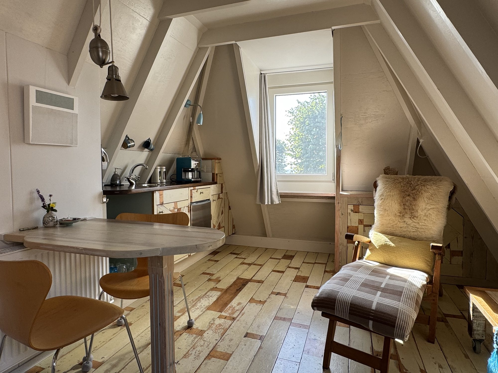
B&B Basalt aan See
Sfeervol overnachten aan de oude gracht van Stavoren, in een karaktervolle kamer met eigen badkamer en een vleugje strandhuis.
Een bijzondere plek aan het IJsselmeer
B&B Basalt aan See ligt aan de oude gracht van Stavoren, één van de Friese Elfsteden. De tweepersoonskamer is ingericht in een eigenzinnige strandhuisstijl, met verweerd hout, maritieme details en handgemaakt keramiek.
De B&B bevindt zich boven Atelier Basalt van keramiekkunstenares Renske Wierda. Als gast maakt u gebruik van handgemaakt servies uit het atelier en kunt u de galerie bekijken.
Een kleinschalige B&B voor wie houdt van rust, water, wandelen, fietsen en de sfeer van een oude havenstad.
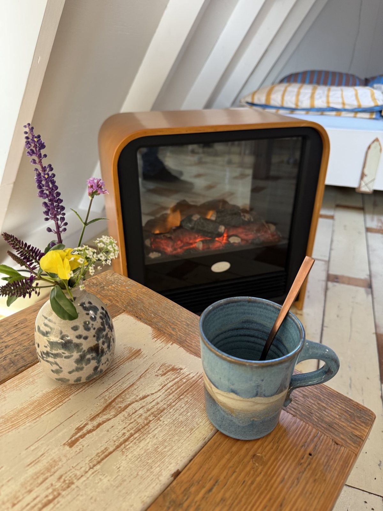
Warm, eigenzinnig en comfortabel
Alles wat u nodig heeft voor een ontspannen verblijf, zonder onnodige poespas.
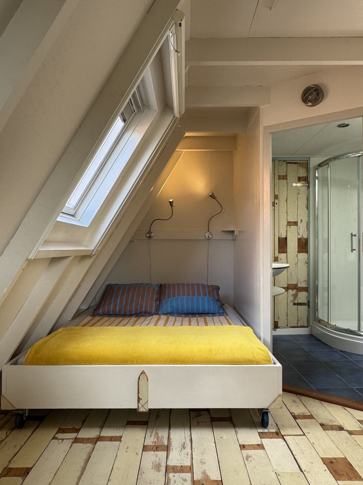
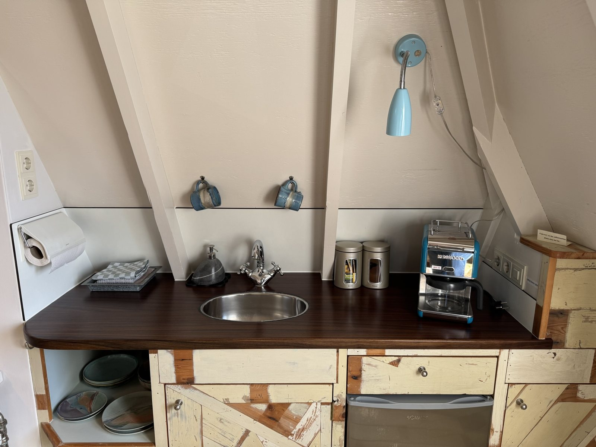
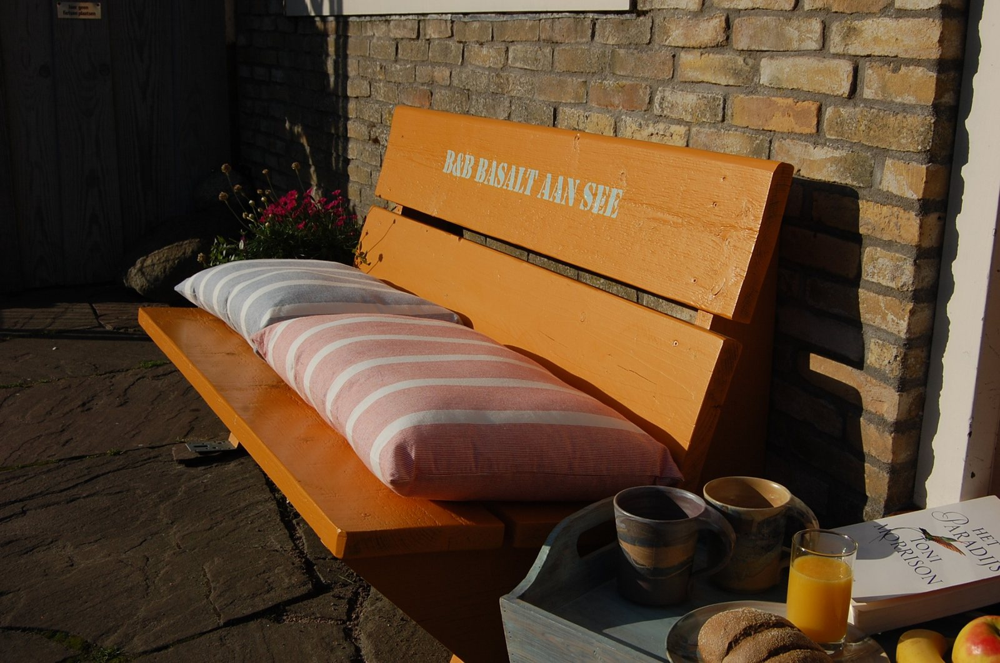
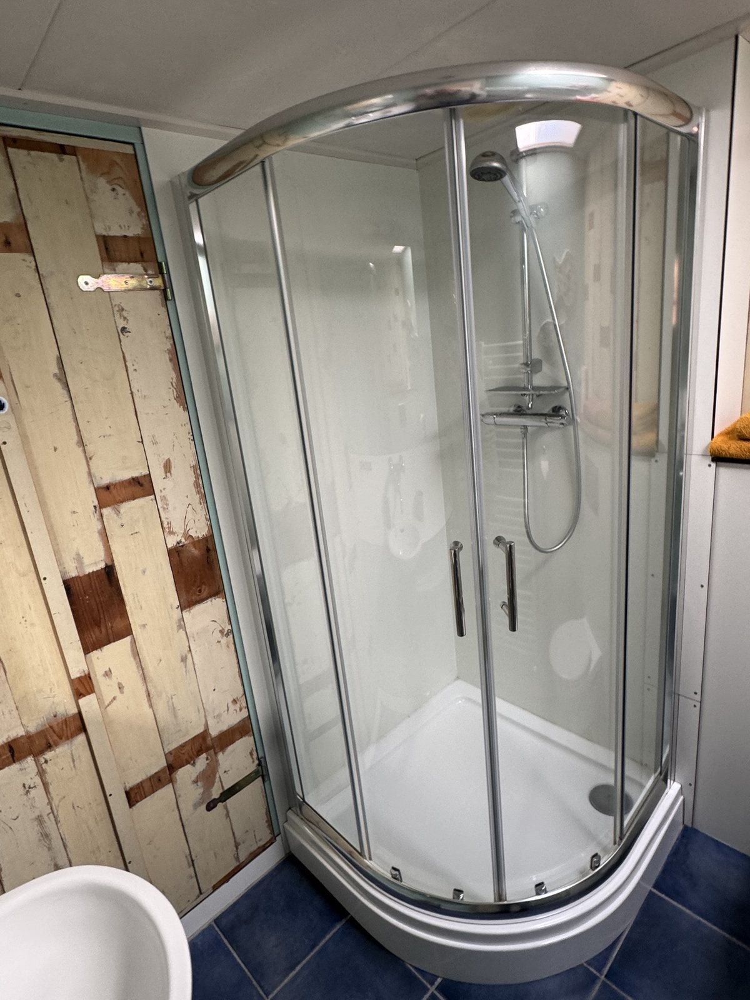
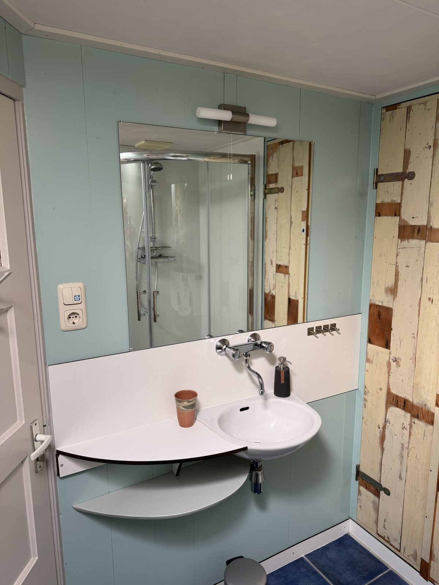
Warm, eigenzinnig en comfortabel
De kamer beschikt over een tweepersoonsbed met twee matrassen en twee aparte dekbedden, een eigen badkamer met douche en toilet en een kleine keuken. Er is een tafel met stoelen en een comfortabele ligstoel. U kunt zelf een eenvoudig ontbijt bereiden; uitgebreid koken is niet mogelijk.
Ontdek Stavoren en Zuidwest‑Friesland
Stavoren is één van de Friese Elfsteden en ligt direct aan het IJsselmeer. Wandel langs de oude haven, de karakteristieke vuurtorens en de dijk, of stap op de fiets richting de bossen en glooiende landschappen van Gaasterland. Ook de Friese meren, Hindeloopen en Workum liggen dichtbij. Een fijne uitvalsbasis voor watersport, wandelen, fietsen en het ontdekken van Zuidwest‑Friesland.
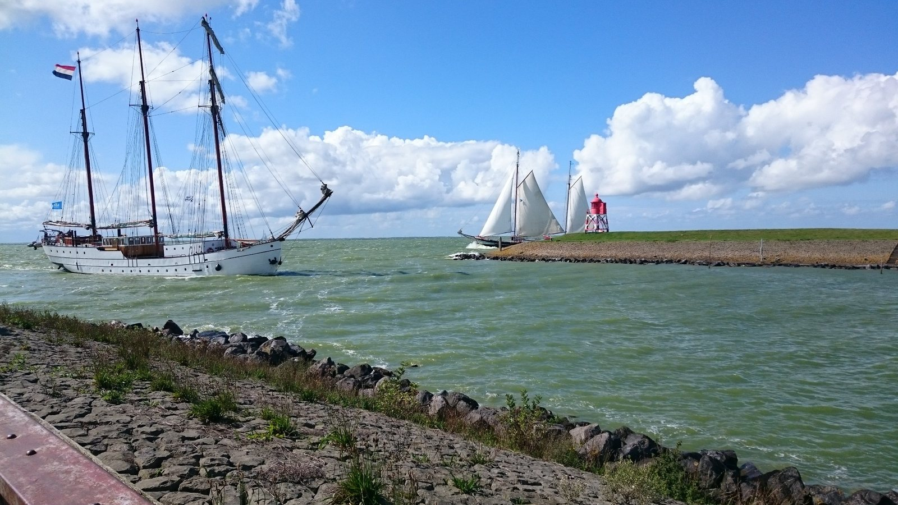
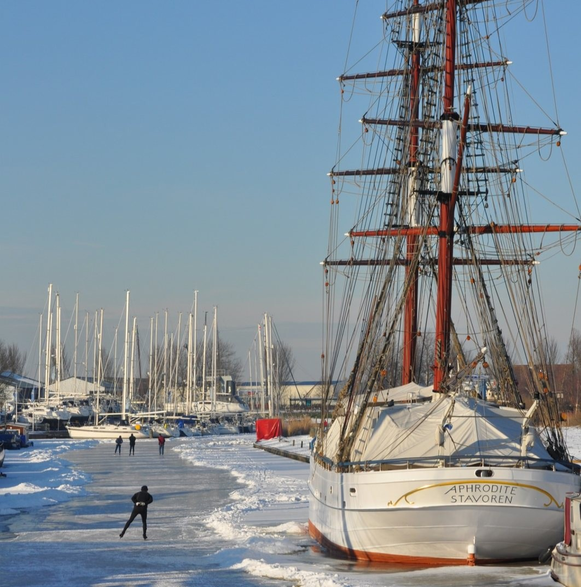
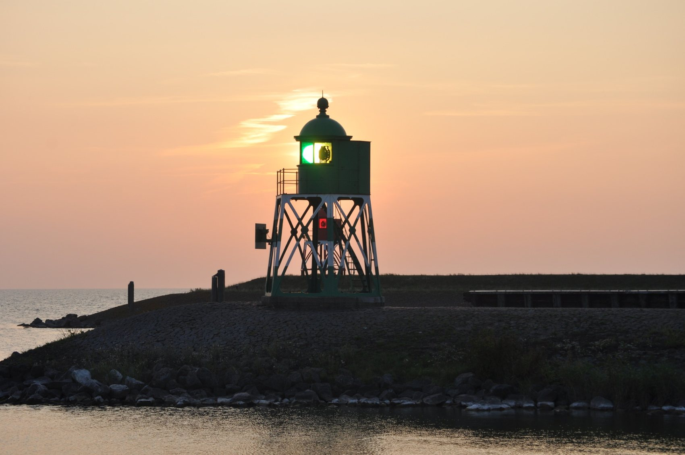
Praktische informatie
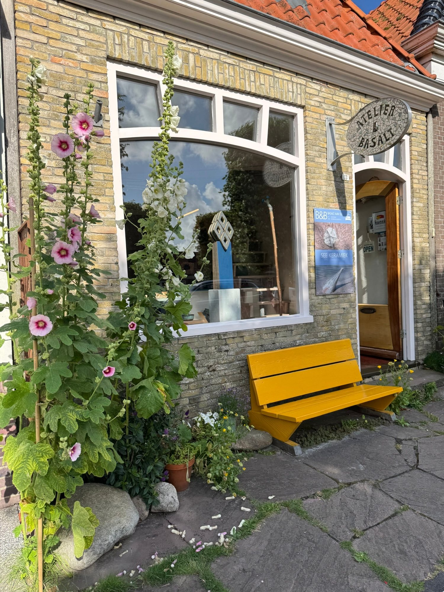
Vraag naar beschikbaarheid
Er is bewust geen online boekingskalender. Neem rechtstreeks contact op voor beschikbaarheid of andere vragen.